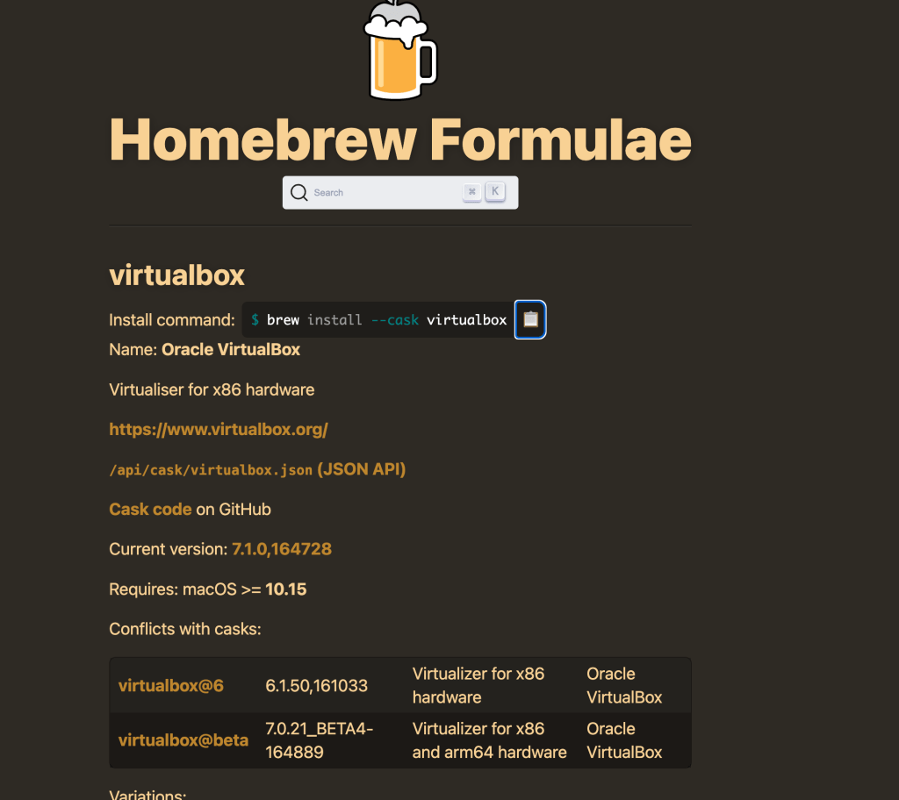
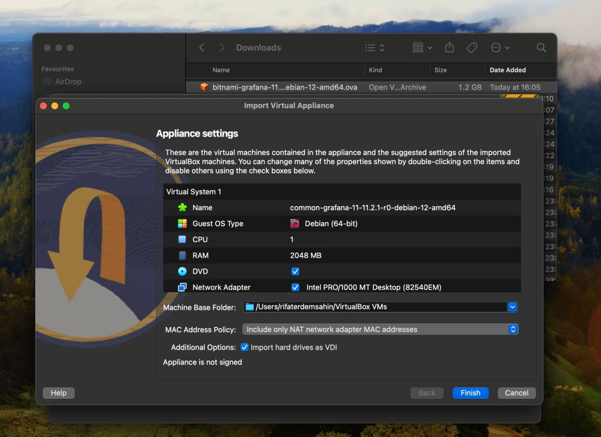
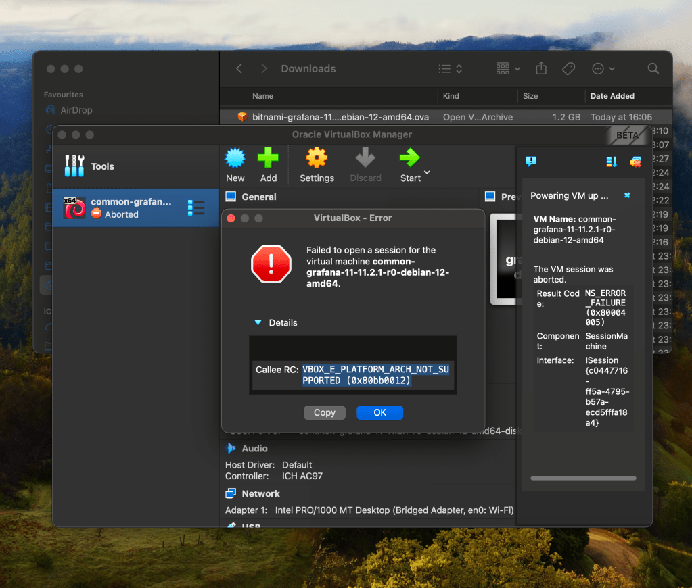

🛠️ Debugging Access to Grafana on VMware Workstation from Windows 11 🚀
If you're struggling to access a Grafana instance running on a Debian VM in VMware Workstation from your Windows 11 host, don't worry! This guide will walk you through the entire debugging process, step-by-step, with scripts and commands to get you going. Let's dive in! 🌊
👷 Step 1: Check Your VMware Network Configuration 🌐
VMware Workstation offers three main networking modes for virtual machines. First, we need to identify which one you're using:
Network Modes:
-
NAT (Network Address Translation): The VM shares the host’s IP but needs port forwarding for external access.
-
Bridged: The VM is on the same network as your host and other devices. No additional configuration needed if everything works as expected.
-
Host-Only: The VM can only communicate with the host, no internet or external device access.
📝 Verify Network Settings:
-
On Windows: Open VMware Workstation and check your VM’s network settings.
-
Right-click the VM > Settings > Network Adapter > Check if it’s NAT, Bridged, or Host-Only.
🔍 Step 2: Verify IP Addresses 🏠
We need to confirm the IP addresses of both the host (Windows) and the VM (Debian).
📝 On Debian (VM):
Run the following command to check the IP address:ip addr show
Look for the inet line under your network interface, typically eth0. You should see something like inet 192.168.x.x.
📝 On Windows (Host):
Open a Command Prompt or PowerShell and run:ipconfig
Look for your Ethernet Adapter or Wi-Fi Adapter, and note down the IPv4 address.
🔐 Step 3: Firewall Configurations 🔥
Linux (Debian) 🔐
On Debian, we need to ensure that Grafana is not being blocked by the firewall. By default, Grafana uses port 3000.
📝 Allow Grafana Port on Debian:
sudo ufw allow 3000/tcp
If you're using iptables instead of ufw, run:sudo iptables -A INPUT -p tcp --dport 3000 -j ACCEPT
Windows 11 🔐
Next, ensure your Windows Firewall allows connections to the VM.
📝 Allow Grafana Port on Windows (for Bridged/Host-Only):
-
Open Windows Defender Firewall.
-
Click Advanced settings > Inbound Rules > New Rule.
-
Select Port > TCP > Enter 3000 > Allow connection.
📝 NAT Port Forwarding (If using NAT mode):
If you're using NAT mode, VMware requires port forwarding to allow external connections to your VM.
-
Go to the
vmnetnat.conffile (usually located atC:\ProgramData\VMware). -
Add the following lines under the
[incomingtcp]section:
3000 = <Your VM's IP>:3000
- Restart the VMware NAT service by running:
net stop "VMware NAT Service" && net start "VMware NAT Service"
🧪 Step 4: Test Grafana from Windows 🖥️
Once firewall rules are set, let’s try to access Grafana from the host (Windows). Open a browser and go to:http://<VM-IP>:3000
Replace <VM-IP> with the Debian VM's IP address.
🔍 Step 5: Troubleshooting Scripts 🛠️
If the connection still doesn’t work, let’s use these debugging tools:
1. Ping Test 🏓
Ensure the host and VM can communicate by pinging each other.
📝 From Debian (VM):
ping <Windows-IP>
📝 From Windows:
Open Command Prompt and run:ping <Debian-IP>
2. Checking Open Ports 🔎
Use netstat to check if Grafana is listening on port 3000.
📝 On Debian (VM):
sudo netstat -tuln | grep 3000
If it returns something like:tcp 0 0 0.0.0.0:3000 0.0.0.0:* LISTEN
Then Grafana is running and accepting external connections.
🏁 Final Checkpoints ✅
-
Correct IPs: Ensure the host and VM are in the same network/subnet.
-
Open Ports: Verify that port 3000 is open on both the VM and host firewalls.
-
Network Configuration: Double-check that the VM network mode allows external connections (Bridged or NAT with port forwarding).
🚀 Conclusion
By following these steps and using the provided scripts, you should be able to resolve issues accessing your Grafana instance from your Windows host. Whether it's NAT, Bridged, or firewall issues, this guide covers the typical challenges that can block your connection.
Good luck debugging! 🛠️ If you run into any more issues, feel free to comment below! 💬
==================================================================
*** TRY ON MACBOOK ENVIRONMENT ***
==================================================================
To run an OVA (Open Virtual Appliance) file on your MacBook, you can use VirtualBox or VMware Fusion, both of which support OVA files. Here's a step-by-step guide for both options:
1. Using VirtualBox (Free Option):
Step 1: Download and Install VirtualBox
-
Go to the VirtualBox website and download the macOS version.
-
Install VirtualBox by following the installation instructions.
Step 2: Open VirtualBox
- Launch VirtualBox after installation.
Step 3: Import the OVA File
-
In VirtualBox, click on the File menu and choose Import Appliance.
-
Browse for the OVA file on your MacBook and click Continue.
-
Review the virtual machine settings (you can modify these later if needed), and then click Import.
Step 4: Run the Virtual Machine
-
Once the import is finished, the virtual machine will appear in VirtualBox’s main interface.
-
Select the virtual machine and click Start to run the OVA.
2. Using VMware Fusion (Paid Option with Free Trial):
Step 1: Download and Install VMware Fusion
-
Go to the VMware Fusion website and download the latest version.
-
Install VMware Fusion by following the instructions.
Step 2: Open VMware Fusion
- Launch VMware Fusion after installation.
Step 3: Import the OVA File
-
In VMware Fusion, go to File > Import.
-
Browse for the OVA file and select it.
Step 4: Customize and Run the Virtual Machine
-
After the import process, you can configure the VM settings (RAM, CPU, etc.).
-
Click Finish and start the virtual machine by clicking Play.
Let me know if you need help with any part of the process!



Imported from rifaterdemsahin.com · 2024